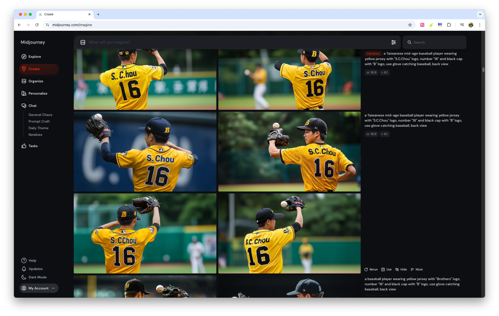
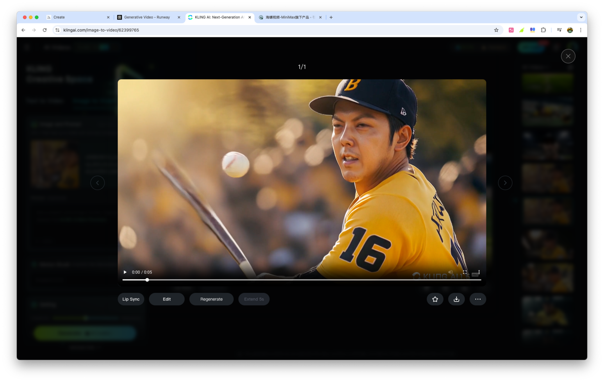
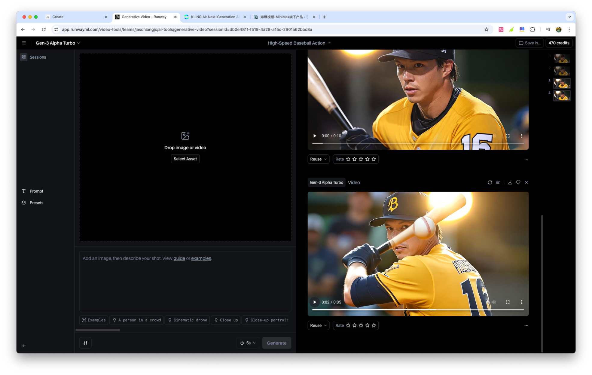
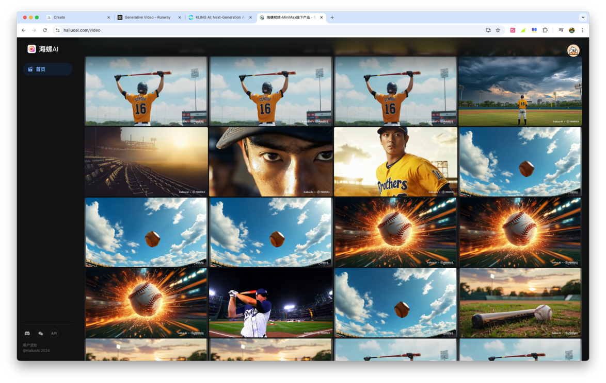
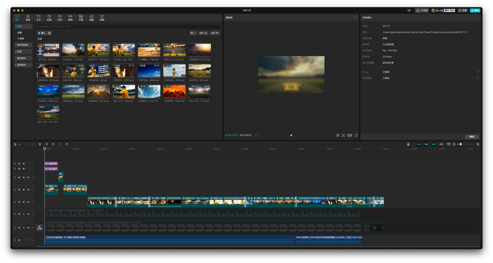

1. 準備階段
1.1 選擇音樂
本次製作選擇了中信兄弟棒球隊周思齊的應援曲作為背景音樂，以紀念他的引退。
1.2 AI 輔助構思
在初期構思階段，主要運用了 ChatGPT 和 Claude。具體步驟如下：
- 向 AI 提供完整歌詞。
- 說明需求是用 AI 製作 MV。
- 請求 AI 協助進行歌詞分段和轉換為提示詞。
快速產生了分鏡靈感，為後續的視覺元素創作提供了想法來源。
2. 製作過程
2.1 圖像生成
在圖像生成階段，主要使用了 Midjourney。而為了「角色一制性」，採用了下列參數：
- 運用 cref 功能：這允許提供多張參考圖片，綜合多圖特徵。
- 使用 "cw" 參數：控制參考強度，使生成的圖像更貼近需求。
- 設置 "--cw 0"：僅參考臉部特徵時。

遇到的挑戰：
- 對特定運動動作（如棒球揮棒、滑壘）的理解有限。
- 提供臉部特徵參考後，雖然能維持角色一致性，但與參考圖片的相似度不高。
- 多次嘗試和調整能無法獲得較理想成果。
為了應對這些挑戰，採取了以下策略：
- 嘗試使用背號「16」與名字拼音「S.C.Chou」代替具體人物形象。這種方法雖然可以比較容易生成想要的結果，但有時候文字還是需要經過多次生成「抽卡」才能得到滿意的效果。
- 調整提示詞，專注於捕捉整體氛圍和情感，而非精確的人物肖像。
- 結合後期製作技巧來彌補 AI 生成的不足。
2.2 影片生成
在影片生成階段，嘗試使用了 Kling AI、海螺 AI 和 Runway 等工具。然而，這個過程也面臨了一些挑戰：
- AI 對特定運動動作的理解仍然有限。
- 生成結果常常出現意料之外的效果。
- 平台的使用成本和生成速度限制了反覆嘗試的可能性。



針對這些問題，調整了圖像與影像生成提示詞：
- 主要聚焦於鏡頭移動和天空光影變化。
- 減少特定動作的畫面。
2.3 後期製作
在後期製作階段，主要使用了 CapCut 進行剪輯。這個階段的重點是：
- 通過剪輯技巧彌補 AI 生成內容的不足。
- 運用裁切、轉場、特效動畫等方式，盡量改善視覺效果。

3. 未來展望與改進計劃
基於這次的製作經驗，制定了以下改進計劃：
- 使用配備 PC 上先進行初步圖像生成和驗證，以減少對線上服務的依賴。
- 目前進度：開始使用 SimpleSDXL 等工具進行 PC 圖像生成的嘗試。
- 提高精確度：計劃使用 fluxgym 等自行訓練 LoRA 或用 IP-Adapter、PuLID 等工具來換臉提高角色生成的精確度。
4. 結論
4.1 AI 輔助創作的優勢
- 輔助思考，幫助推敲和視覺化創作概念。
- 提供多樣化的創意可能性。
4.2 面臨的挑戰
- 線上服務使用過程中的成本控制。
- 特定題材（如運動動作）的準確生成。
4.3 其他調整方向
- 研究類似題材：查看市面上是否有人製作類似內容，選擇適合的工具。
- 善用免費額度：對於新題材，先利用免費額度進行試錯。
- 注意成本控制：留意付費服務的額度使用，不要過於追求完美生成。
- 重視後期製作：善用剪輯工具、特效、裁切或轉場來彌補生成結果的不足。
- 平衡 AI 和人工創意：認識到 AI 工具的局限性，適時介入人工創意。
藉由運用 AI 工具，結合人工創意和後期製作技巧
註：本文是在 AI 助理 Claude 的引導下完成的，記錄了一次使用 AI 工具製作音樂影片的過程回顧。